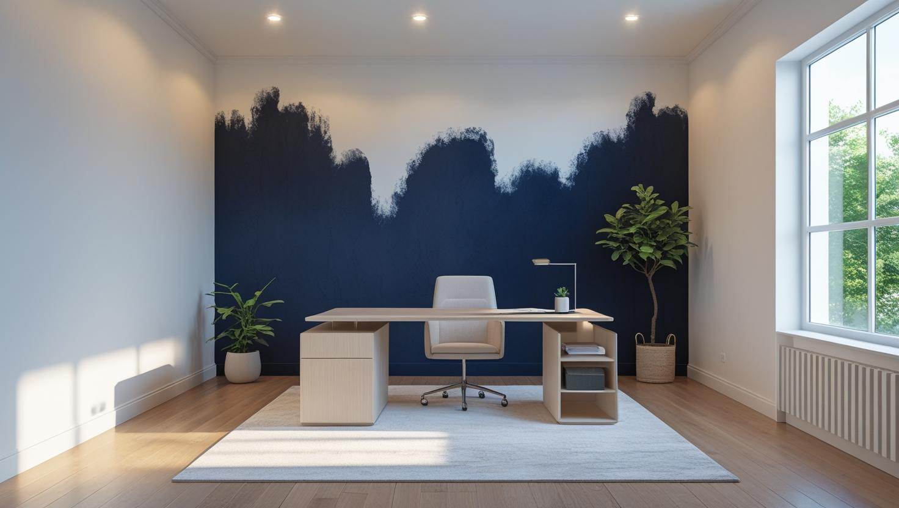
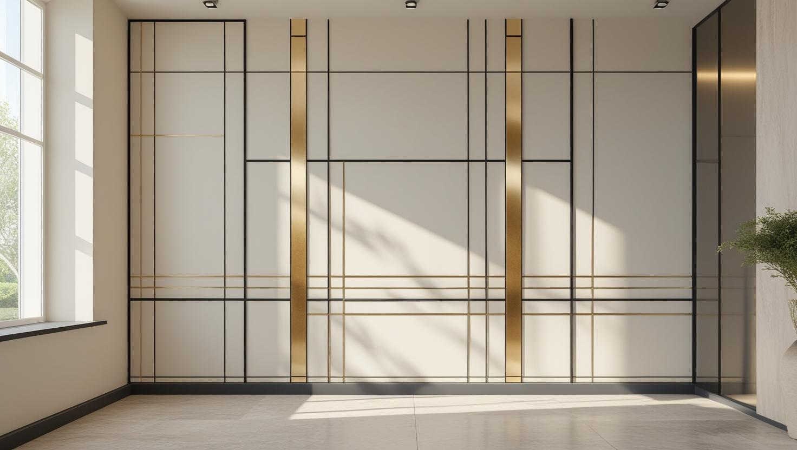

Çekmeköy'ün Tercihi Profesyonel Boyacı Ustası
Daire, villa, site ve iş yerleriniz için Çekmeköy'ün modern ve doğal yapısına uygun, titiz ve kaliteli boya badana hizmetleri sunuyoruz.
Çekmeköy'de Boya Badana: Villa, Site ve Orman Nem Etkisi
Çekmeköy boyacı talebi ilçenin görece yeni ve düşük yoğunluklu yapısını yansıtıyor: villa ve müstakil ev siteleri, bunun yanında apartman ve site konutları.
Villa ve müstakil evlerde iş çoğu zaman iç cephe ile sınırlı kalmıyor; dış cephe, bahçe duvarı ve ahşap doğrama da gündeme geliyor. Bunların her biri farklı hazırlık ve farklı boya sistemi istiyor.
Ormanlık alanlara yakınlık, havadaki nem oranını yükseltiyor. Gölge alan ve kuzeye bakan cephelerde bu, yüzeyde yeşillenme eğilimi olarak görülebiliyor; bu cephelerde temizlik ve doğru astar, boya seçiminden daha belirleyici oluyor.
Villadan Site Dairesine Çekmeköy Boyama Hizmetleri

Daire & Villa Boyama
Modern daireler, site içi konutlar ve villalar için Çekmeköy'ün mimarisine uygun, temiz ve profesyonel hizmet.
- Dubleks ve villada merdiven ile zemin koruması
- Site yönetiminin çalışma saatlerine uygun iş planı
- Kaliteli, kokusuz boya seçenekleri
- Yeni dairede köşe çatlakları ve darbe izlerinin rötuşu

Ofis & İş Yeri Boyama
Ofisinizin duvarlarını profesyonel boya uygulamalarıyla yenileyerek ferah ve motive edici bir çalışma ortamı sağlıyoruz.
- Kurumsal renk uyumu ve marka odaklı tasarım
- Mesai saatleri dışında esnek çalışma
- Koku yapmayan, hızlı kuruyan boyalar
- Mobilya koruma ve temiz teslimat garantisi

Site & Dekoratif Boya
Site ortak alanları, dış cepheler ve mekanınıza özel kimlik kazandıracak modern dekoratif boya çözümleri sunuyoruz.
- İtalyan dekoratif boya uygulamaları
- Beton efekti ve modern dokular
- Dış cephe ve ortak alan boyama
- Esnek çalışma saatleri ile hızlı teslimat
Neden Çekmeköy'de Bizimle Çalışmalısınız?
Çekmeköy Uzmanlığı
Çekmeköy'ün semtlerini, sitelerini ve ihtiyaçlarını iyi bilen, tecrübeli yerel ekip
Titiz İşçilik
İç mekân boyasını bahçe duvarında ya da cephede kullanmayız; her yüzey için ona uygun astar ve boya sistemini seçeriz
Premium Malzemeler
Yapınıza değer katan, en iyi ve en dayanıklı markaları (Jotun, Filli Boya, Marshall vb.) kullanırız
Güven & Saygı
Evinizin mahremiyetine ve komşularınıza karşı en üst düzeyde saygılı davranırız
Temiz Teslimat
İş bitiminde evinizi veya iş yerinizi boya öncesi gibi tertemiz bırakırız
Memnuniyet odaklı hizmet
Çekmeköy'deki mutlu müşterilerimiz ve referanslarımız kalitemizin kanıtıdır
Çekmeköy Boyacı Ustası: Modern Yaşam Alanlarınıza Profesyonel Dokunuş
İstanbul'un modern ve planlı gelişen ilçesi Çekmeköy'de boyacı ustası hizmetimiz, yaşam alanlarınızı yenilemek ve değerini artırmak için profesyonel bir çözüm sunar. Ekip olarak, bu dinamik ilçenin modern sitelerinden, Taşdelen ve Alemdağ'daki ferah dairelere, Ömerli'nin doğayla iç içe villalarına kadar her yapıya özel bir yaklaşım sergiliyoruz. Çekmeköy daire boyama veya Çekmeköy villa boyama konusundaki tecrübemiz ve titiz işçiliğimizle, mekanlarınızı sadece boyamıyor, onların estetiğini ve konforunu en üst seviyeye taşıyoruz.
Çekmeköy ve Çevresindeki Hizmet Bölgelerimiz
Çekmeköy boyacı ustası olarak, başta merkez olmak üzere tüm mahallelerine hizmet veriyoruz:
Çekmeköy ve Mahalleleri
- Merkez (Mimar Sinan, Mehmet Akif)
- Taşdelen
- Alemdağ
- Ömerli
- Cumhuriyet
- Nişantepe
- Reşadiye
- Soğukpınar
- Çamlık
- Ekşioğlu
- Güngören
- Hamidiye
Faydalı Bağlantılar
Çekmeköy boya badana planında fiyat hesabı, boya markası ve yakın ilçe seçeneklerini birlikte değerlendirmek için aşağıdaki rehberler kullanılabilir.
Fiyat nasıl belirleniyor? Çekmeköy için bu sayfada rakam yazmıyoruz, çünkü yüzeyi görmeden verilen bir sayı çoğu zaman yanıltıcı oluyor. Keşifte boyanacak iç ve dış alanı ölçüyor; onarım ve temizlik ihtiyacını, astar ile kat sayısını, malzeme sınıfını, erişim koşullarını ve evin eşyalı olup olmadığını not ediyoruz. Yazılı teklif bu notlara göre hazırlanıyor. Keşif ücretsiz; gününü randevuyla birlikte belirliyoruz.
Çekmeköy'de kapsamı belirleyen ana ayrım işin iç cephe ile mi sınırlı olduğu yoksa dış cephe, bahçe duvarı ve ahşap doğramayı da mı kapsadığı. Dış cephede yükseklik, erişim ihtiyacı ve nem gören yüzeylerde çıkan temizlik işi kapsamı belirgin biçimde büyütüyor.
Nem gören cephelerde hangi temizlik, astar ve boya sisteminin seçildiğini rutubetli ve küflü duvarlar için boya yazısında adım adım anlattık. Ev büyüklüğüne göre değişen aralıklara 2026 ev boyama fiyatları yazısından ulaşabilirsiniz; Çekmeköy dışında hangi ilçe ve semtlerde keşfe çıktığımız da İstanbul boyacı hizmet bölgeleri sayfasında listeleniyor.
Sıkça Sorulan Sorular
Çekmeköy'de villa, yeni site dairesi ve dış cephe boyasına dair sık sorulanlar
Zorunlu değil; duvarlar temiz ve renk size uygunsa beklemek de mümkün. Rengi değiştirmek istiyorsanız ya da köşelerde kılcal çatlak ve taşıma izleri varsa, ev boşken yapılan boya daha kısa sürüyor ve eşya koruma adımı olmadığı için hazırlık azalıyor. Keşifte yalnız rötuşun mu yoksa komple boyanın mı gerektiğini yüzeye bakarak söylüyoruz.
Bu bölgelerde site içi daire boyama, villa iç cephe yenileme ve nem kontrolü gereken yüzeyler öne çıkar. Bina yaşı, eşya yoğunluğu ve teslim tarihi iş programını belirlediği için çalışma planı adrese göre hazırlanır.
Dış cephede boya ancak yüzey kuruyken ve hava, üreticinin önerdiği sıcaklık aralığındayken sürülüyor; yağış beklenen günlerde işe başlanmıyor. Ömerli ve Alemdağ gibi ormana yakın kesimlerde sabah nemi yüzeyde uzun kalabildiği için uygulamayı yüzey kuruduktan sonra başlatıyoruz. Kış aylarında dış cephe işi bu nedenle havanın elverişli olduğu günlere yayılarak planlanıyor.
Evet. Dış cephe ve bahçe duvarı boyanırken çim, taş zemin ve bitki dipleri örtüyle kapatılıyor; iş sonunda örtüler kaldırılıyor, teras ve pencere önlerine sıçrayan boya temizleniyor. Evin içinde de bant ve naylon atıkları toplanmadan iş bitmiş sayılmıyor.
Villa boyamada iç ve dış cephe birlikte planlanabilir mi?
Planlanabiliyor ve ekip açısından avantajlı: kurulum tek defa yapılıyor. Ancak dış cephe hava koşullarına bağlı olduğu için iki işin takvimi her zaman üst üste gelmeyebiliyor. Keşifte buna göre planlıyoruz.
Ormana bakan cephede yeşillenme tekrar eder mi?
Gölge ve nem alan cephelerde biyolojik yüzey oluşumu tekrar edebiliyor. Uygun temizlik, doğru astar ve dış cepheye uygun bir sistem bunu geciktiriyor; ancak bu cephelerin bakım aralığı güneş gören cephelere göre daha kısa oluyor.
Bahçe içindeki ahşap yapılar da boyanıyor mu?
Boyanıyor. Ahşapta önce eski katmanın durumu değerlendiriliyor; zımpara ve uygun astar aşaması ayrı bir kalem oluyor. Dış mekân ahşağında kullanılan sistem iç mekândan farklı.
Google Haritalar'daki Müşteri Yorumlarımız
Yorumlar, İstanbul Boyacılık'ın Google Haritalar işletme profilinden olduğu gibi alınmıştır. Çekmeköy dahil İstanbul genelindeki işlerimize ait yorumların tamamını Google Haritalar profilimizde okuyabilirsiniz.
"Enes beye çok tşk ettim yönlendirigi ustalar gayet güzel işçilik yaptılar poşet olsun süpürgelik üstüne band olsun hepsini yaptılar ve işin sonu mükemmel hiç kirletme olmadı gönül rahatlığıyla tavsiye ediyorum tekrardan çok teşekkürler ediyorum gayet memnun kaldım"
Mehmet Çevik
Google Haritalar yorumu
"Baran ustadan çok memnun kaldık, ellerine emeğine sağlık hakkını helal etsin. Temizliğe özene çok dikkat eden ince işçilik çalışan birisi. Mutlaka çevreme de önereceğim kendisini. 🙏"
Yaren Sert
Google Haritalar yorumu · İç cephe boyama
"Firma ile Mayıs 2026 başında çalışma imkanım oldu gelen Baran Usta işinin gayet ehli hızlı ve tertemiz işini bitirdi fiyatları gayet uygun çalışma performansı gayet yüksek daireyi pırıl tertemiz yapıp çıktılar Baran Usta ve yanındaki arkadaşlara teşekkür ederim"
Tamer Özkenel
Google Haritalar yorumu
İletişim Kurun ve Ücretsiz Keşif Alın
İşletme merkezi: Orta, Demirkapı Cd. No:1, 34030 Bayrampaşa/İstanbul
İşletme merkezini Google Haritalar’da görüntüleyin
İletişim Bilgilerimiz
Çalışma Saatleri: 7/24 (Pzt-Paz 00:00-23:59)
Telefon: 0507 832 29 12
E-posta: boyaustamistanbul@gmail.com
10+ Uzman Ustamızla Çekmeköy ve tüm İstanbul'a hizmet veriyoruz.